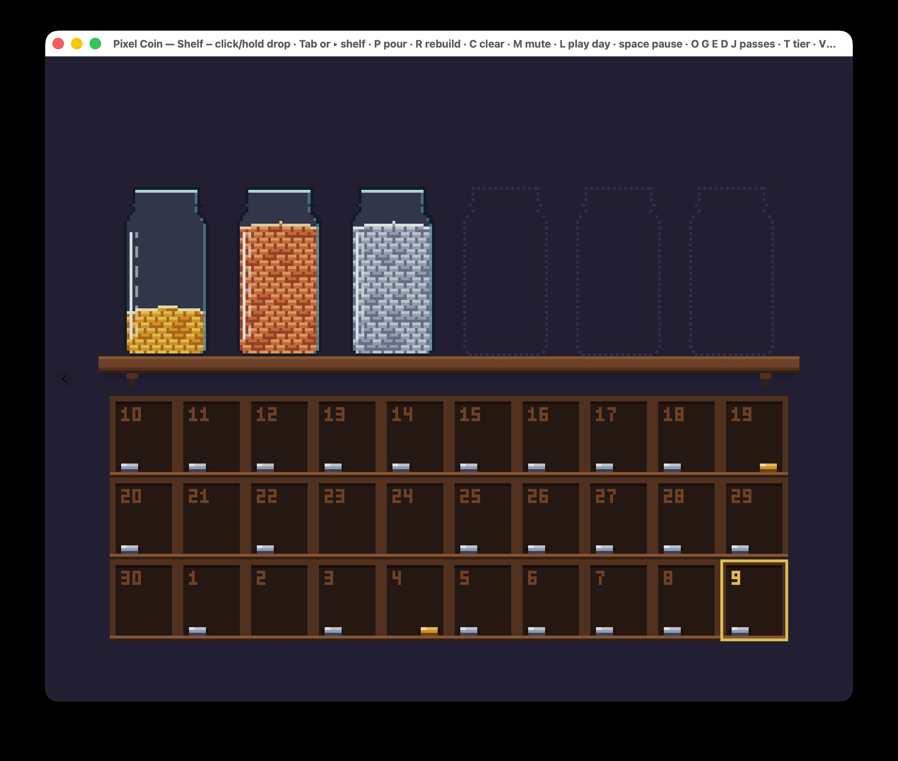

大多数 Vibe Coding 新手都觉得，跟着市场潮流做 App 才稳妥。做一个大家好像都想要的 App，起码还有机会。我以前也这么想。有好几个星期，我一直在纠结：该做大家都喜欢的 App，还是做我自己喜欢的？
我现在的答案是：对刚入门的 App 开发者来说，追潮流并没有看上去那么稳。大多数 App 本来就赚不了多少钱；而你自己每天要用的那个，你才会一直改下去。
我看了 Jonathan Blow（《时空幻境》《见证者》）和 Edmund McMillen（《超级食肉男孩》《以撒的结合》）聊他们为什么只做自己想玩的游戏。里面有一句话：
「我宁可做一款游戏，玩的人不多，但他们都把它当成这辈子最爱；也不想做一款很多人都觉得『还行』的游戏。」
他们拿另一种做法开玩笑：为「喜欢……《阿凡达》之类的 15 到 19 岁的人」设计游戏。「这到底是什么意思？」Blow 问，「我猜就是看看别的游戏，然后照抄吧。」
这是两位大牌开发者的建议，听着挺有道理。可他们有名，恰恰是因为他们做成了。在这条路上失败的人很少上访谈的，所以我先讲自己的例子，再看看销售数据怎么说的。
我在做一个叫 Time-Cost-Averaging 的 App，记录在几项技能上的「定投时间」。你选一项技能，开始一段 25 分钟的专注，App 会记下你在每项技能上一共花了多少时间。名字来自「定投」（dollar-cost averaging）：按固定节奏投固定的钱，不去猜什么时候该入场。
计时类 App 通常长得像仪表盘：倒计时、图表、总数，一大堆文字。
我的一样都没有。说白了，它是个披着 App 外衣的游戏：像素画风，拿硬币、罐子和架子打比方，一个字的说明都没有。

有了这个架子，它就不只是好看而已。架子一满，你就得把罐子兑掉，给下一次专注腾地方，而每次兑换都有回报：金币堆在当天的格子里，配上动画和硬币掉落的声音。有硬限制，又有奖励，这才算得上是游戏。而且这个固定的架子，和我上一篇文章讲的是一回事：一天的时间是有限的，所以你没法一直往上加目标。架子只是把这一点摆到了眼前。
我喜欢金币。喜欢看它们堆起来，喜欢听它们掉下去的声音。这是我的口味，有几个看过的朋友也说喜欢。
如果跟着市场走更稳，那追潮流的 App 应该更常赚到钱。我没找到直接比较这两条路的数据。我只找到一件事：不管 App 还是游戏，收入都是同一条很陡的长尾，绝大多数几乎赚不到钱。
App Store 的数据比较老，也不太完整，但能看出这条长尾（Perry, 2015）。Steam 的数据新一些：2019 年发布的游戏，上架以来总收入的中位数是 1,136 美元，还没扣 Steam 的分成（Zukowski, 2022，数据来自 Video Games Insights）。只有大约十分之一超过了 20 万美元。
「为自己做」也逃不开这个概率。《Where the Water Tastes Like Wine》做了四年，卖出的份数比开发者的 Twitter 粉丝还少（CGMagazine, 2018）。Boomzap 的 CEO 是这么说《Last Regiment》的：「有一小群人极爱这款游戏，也在大声安利，但地球上剩下的人就是不想玩」（PocketGamer.biz, 2021）。这正是 Blow 说的那种游戏：玩的人不多，但都把它当成最爱，只是没换来销量。
所以，我没有证据说为自己做卖得更好。但我也没有证据说跟市场走就卖得更好。反正几乎怎么做都赚不了多少，拿销量当理由去选「稳妥」那条路，说不通。得看别的。
为自己做 App，你一上来就有了一个忠实用户，就是你自己。
我在好几项技能上投入时间，我需要看到自己一共投了多少，投的时候还要有即时反馈：硬币掉下来，带响儿的那种。正因为我离不开这个反馈，它一下没了或者声音不对，我马上就能发现。然后我就去修。用、发现、修、再用。
要是你给一个想象出来的「15 到 19 岁的人」做 App，缺了什么就只能靠猜。我自己只要打开 App 就行。
自己天天用的东西，更容易一直改下去。目前的证据只有我一个人，不过 App 会记录每一段专注，再过几个星期我就拿数据来更新。
像素风的罐子、往下掉的硬币，放在 iPhone 上，跟别的计时 App 都不一样。这正是 Blow 和 McMillen 的观点：大家都在做自己以为市场想要的东西，结果做出来的全一个样，这时候一个很个人的 App 反倒很显眼。
但显眼不代表有人找得到它。很多有特色的游戏也只卖了几千份。
更大的风险是我决定不放文字说明。我希望大家靠一点不用文字的小提示，就能自己摸索出来怎么兑换。前提是这套比喻得是常识性的，不能只是我自己的习惯。硬币、罐子、架子满了，这些谁都懂。Blow 在《见证者》里做过类似的事：游戏里「没有任何文字或对话直接解释谜题的规则」，规则是谜题自己教给你的。不过我还是得测试：把 App 交给几个人，什么也不说，看着他们自己玩。
我不是典型的新手。 我刚接触 App 和游戏，但以前是做后端开发的。我已经知道怎么把一个软件做完。要是你什么都没发布过，用、发现、修这个循环照样有用，只是在它转起来之前，你得多学不少东西。
我需要靠这个赚钱。 这不是爱好。上面说的东西都是在帮你在两条路里面选出更好的，但是我也不能保证其中任何一条路肯定能赚大钱。第一个 App，大概率走哪条路都赚不到钱。Blow 和 McMillen 说，你的用户要靠「几款游戏」慢慢积累。你得一直把自己做的东西拿给人看，「直到聚起足够多的人，让它能撑下去」。
如果你正把自己的想法搁在一边，去追那些看着稳妥的东西，不妨算笔账：你放弃的，是一个肯定会有的用户、一股肯定会有的劲头；换来的，只是一点销量上的机会，而这点机会，做自己想用的 App 也一样有。
我的建议是：做个你自己每天都会打开用的东西，用别人一看就懂的比喻。还有，做好不止做一个 App 的准备。
或者像 McMillen 在对话最后开玩笑说的：「宅在家里，做点超酷东西吧。」